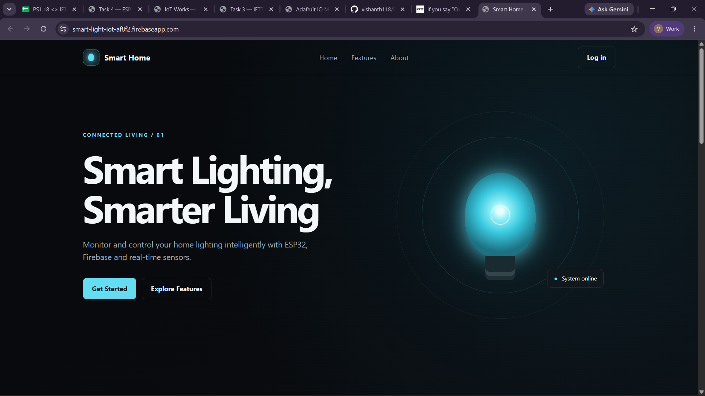
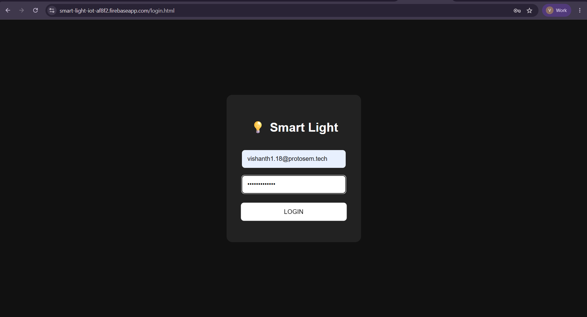
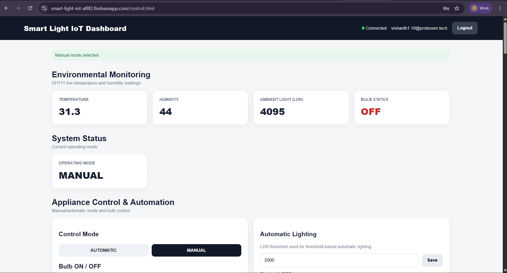

IoT Project · Task 5
Firebase Logging, Automation & Data Export
Extended the Firebase smart-light system with timestamped sensor history, paginated data logs, light-threshold automation, manual relay control, and CSV export for spreadsheet analysis.
Demonstration videos
Demonstration 1: ESP32 telemetry, real-time logging, and monitoring.
Demonstration 2: Manual/automatic control modes and CSV data export.
Dashboard evidence



The supplied screenshots document the landing, login, and main control pages. Historical log and export behavior are represented by the two supplied demonstration videos and described in the report below.
Overview
Task 5 extends live monitoring by saving each sensor sample with a timestamp. A data-log view presents historical temperature, humidity, light level, and bulb state, with Previous/Next pagination. The interface also supports direct Manual control and Automatic control using an LDR threshold. Stored history can be exported as CSV for analysis in spreadsheet software.
System architecture
Telemetry and export
- DHT11 and LDR readings are collected by the ESP32.
- Each sample is stored in Firebase with a timestamp and bulb state.
- The dashboard data log displays historical records page by page.
- The user exports the records to a CSV file for spreadsheet analysis.
Control paths
- Manual: Dashboard command → ESP32 → relay → bulb.
- Automatic: LDR reading → threshold comparison → ESP32 → relay → bulb.
- The mode determines whether the user or sensor condition drives the bulb.
Hardware and software
Hardware
- ESP32 Dev Module
- DHT11 temperature/humidity sensor
- LDR light sensor
- Relay module and bulb
- Wi-Fi connection
Software and services
- Firebase Realtime Database
- Firebase-hosted IoT dashboard
- ESP32 firmware and sensor libraries
- CSV file export
- Spreadsheet software for analysis
Logged data and automation
Historical records include timestamp, temperature, humidity, light condition, and bulb state. Example rows from the project notes show measurements recorded at five-minute intervals and paginated through Previous and Next controls.
In Automatic mode, the ESP32 compares the LDR value with the configured threshold, determines whether the environment is dark or bright, and controls the relay accordingly. In Manual mode, the dashboard command directly controls the bulb.
Open the Smart Light dashboardResult and learning
This stage moves the project from real-time values toward useful stored IoT data. Timestamped history makes earlier readings available, threshold automation reduces the need for continuous manual operation, and CSV export makes the readings usable outside the dashboard.
The project also combines manual and automatic control in one system and highlights practical limits such as Firebase usage quotas, DHT11 precision, LDR threshold calibration, and network dependency.
Complete project write-up
Expand to read all sections from the project notes
EXPERIMENT 05
TASK 05
IoT / End-to-End System / Firebase Logging & Automation
Firebase Logging, Automation & Data Export
Historical Data Logging, Dual Control Modes & CSV Export
Extended the Firebase IoT system by adding historical data logging, light-based automation, manual relay control, and CSV export for further data analysis.
ESP32 Firebase Data Logging Automation CSV Export LDR Relay IoT Dashboard
Task
IoT Works — Task 05
- Microcontroller: ESP32 Dev Module
- Cloud Storage: Firebase History Log
- Control Modes: Manual • Automatic
- Sensor Automation: LDR Light Threshold
- Data Output: CSV Spreadsheet Export
Overview
This stage focused on extending the IoT system beyond simple real-time monitoring. Sensor readings are stored as historical records, shown through a dedicated data-log interface, and provided as a CSV export. The system also includes two operating modes for the bulb: manual control through the dashboard and automatic control according to the light level measured by the LDR.
The historical data log contains:
- Timestamp — Date and time of the recorded measurement
- Temperature — Ambient temperature reading
- Humidity — Relative humidity value
- Light Condition — Environmental light-level measurement
- Bulb State — Relay actuator state (ON/OFF)
The data-log interface also supports multiple pages through Previous and Next pagination buttons.
Key Concepts
Data Logging
Instead of storing only the latest sensor value, the system records timestamped measurements. This allows previous environmental conditions to be viewed later.
Light Threshold
The measured light value is compared with a predefined threshold to decide whether the environment is dark or bright.
Manual Mode
In manual mode, the user directly operates the bulb using the dashboard.
Automatic Mode
In automatic mode, the bulb state is controlled according to the LDR reading and the configured threshold.
CSV Export
The stored historical information can be converted into a CSV file, making it possible to open and analyze the data using spreadsheet applications.
System Architecture
End-to-End System Architecture & Dual Control Flow
1. Telemetry Data Pipeline & Export Path
SENSORS DHT11 + LDR Environmental sensing
↓
MCU ESP32 Read sensor values
↓
CLOUD Firebase Live Data + History
↓
WEB UI Dashboard Monitoring interface
↓
LOG Data Log Historical table
↓
FILE CSV Export Spreadsheet file
2. Dual Control Paths — Manual vs Automatic
MANUAL CONTROL PATH
User → Dashboard → Command → ESP32 → Relay → Bulb
User ↓ Dashboard ↓ Relay ↓ Bulb
AUTOMATIC CONTROL PATH
LDR → Threshold → ESP32 → Relay → Bulb
LDR ↓ Threshold ↓ ESP32 ↓ Relay ↓ Bulb
Historical Data Logging
Every sensor reading is stored along with its timestamp. This allows the system to maintain a history of measurements instead of displaying only the latest values.
Logged Data Structure
| TIMESTAMP | TEMPERATURE | HUMIDITY | LIGHT | BULB STATE |
|---|---|---|---|---|
| 2026-09-28 14:15:02 | 26.4 °C | 58% | 412 Lux | OFF |
| 2026-09-28 14:20:18 | 26.8 °C | 57% | 185 Lux | ON |
| 2026-09-28 14:25:44 | 27.2 °C | 56% | 140 Lux | ON |
| 2026-09-28 14:31:10 | 26.9 °C | 58% | 520 Lux | OFF |
Previous | Page 1 | Next
Dual Control Modes
MANUAL MODE
Manual Operation
Manual mode allows the user to directly control the bulb through the dashboard. In this mode, the bulb is operated by the user instead of being automatically controlled by the light sensor.
Step 1 — USER ↓ Step 2 — DASHBOARD ↓ Step 3 — COMMAND ↓ Step 4 — ESP32 ↓ Step 5 — RELAY ↓ Step 6 — BULB
AUTOMATIC MODE
Automatic Automation
Automatic mode uses the LDR measurement to identify the lighting condition. The measured value is compared with the configured threshold, and the ESP32 decides the required bulb state.
Step 1 — LDR ↓ Step 2 — LIGHT READING ↓ Step 3 — THRESHOLD COMPARISON ↓ Step 4 — ESP32 ↓ Step 5 — RELAY ↓ Step 6 — BULB
Light-Based Automation
Automatic mode allows the lighting response to be controlled according to the surrounding light level without requiring continuous manual operation.
INPUT
LDR Reading Light level sensing
↓
COMPARE
Threshold Logic Compare the reading with the threshold
↓
STATE
Condition Determine Dark / Bright
↓
DECISION
Bulb Decision Determine the automatic bulb state
↓
ACTUATION
Relay Output Bulb switching
CSV Data Export
The historical sensor readings collected by the system can be exported as a CSV file. This makes the stored information available outside the dashboard and allows it to be opened using spreadsheet software.
Export Process Flow
SOURCE Firebase History Cloud database log
↓
VIEW Dashboard Data Log Web UI table
↓
ACTION Export CSV Conversion
↓
FILE CSV File Downloaded file
↓
ANALYSIS Spreadsheet Excel / Sheets
[CSV EXPORT DEMONSTRATION — OPTIONAL MEDIA]
Hardware & Software
Hardware Components
ESP32 Development Board
Main controller used for reading sensors, making decisions, communicating with Firebase, and controlling the relay.
Temperature / Humidity Sensor
Used to collect environmental temperature and humidity readings.
LDR
Used to measure the surrounding light level.
Relay Module + Bulb
Used as the physical lighting output of the system.
Software & Services
Firebase
Used for cloud-based data storage and communication with the dashboard.
IoT Dashboard
Provides the monitoring interface, historical data log, control modes, and export functions.
Spreadsheet Software
Used to open and analyze the exported CSV data.
Data Log Interface
The dashboard contains a dedicated data-log section where previously recorded measurements can be viewed. The table displays timestamp information along with environmental sensor values and the current bulb state.
Data Log Interface
The data-log interface displays recorded IoT measurements with pagination. The supplied demonstration videos document telemetry, logging, monitoring, and export.
Evidence & Visual Verification
Attached dashboard screenshots
The supplied screenshots show the Smart Home landing page, login page, and control dashboard. They document the web application; the dashboard screenshot shows current sensor readings and Manual mode.
System Demonstration Videos
Demonstration Video 01
Demonstration 01: ESP32 telemetry, real-time logging & monitoring.
Demonstration Video 02
Demonstration 02: Dual control mode switching & CSV data export.
Setup & Configuration
STEP 01
Sensor readings are collected by the ESP32.
STEP 02
Each reading is assigned a timestamp and stored as historical data.
STEP 03
The dashboard displays the stored measurements inside the Data Log section.
STEP 04
The user can choose between manual and automatic bulb control.
STEP 05
In automatic mode, the LDR value is compared with the configured threshold.
STEP 06
The recorded information can be exported as a CSV file.
System Workflow
Full-Page Visual System Workflow Diagram
Telemetry & Data Logging Path
1. SENSORS DHT11 + LDR
↓
2. MCU ESP32
↓
3. BAAS Firebase
↓
4. STORE History
↓
5. UI Dashboard
↓
6. LOG Data Log
↓
7. EXPORT CSV Export
Control Mode Interaction Path
INTERFACE Dashboard
↓
MODE SELECT Manual / Automatic Mode
↓
DECISION ESP32
↓
SWITCH Relay
↓
LOAD Bulb
Current Limitations
Firebase Usage
The free Firebase plan has usage limitations. Therefore, continuously increasing historical data may eventually require data cleanup or upgrading to a higher usage plan.
Sensor Accuracy
The DHT11 provides basic environmental readings, so the values are more appropriate for observing trends rather than precision measurements.
LDR Threshold
The classification between dark and bright depends on the selected threshold and the physical location of the LDR.
Internet Dependency
The system depends on Wi-Fi connectivity. If the connection is unavailable, sensor readings are not stored locally on the ESP32.
Future Improvements
01 — History Visualization
Convert the historical data table into interactive charts to make trend analysis easier.
02 — Alerts
Add notifications whenever a sensor reading exceeds a predefined limit.
03 — Offline Data Buffering
Temporarily store sensor readings on the ESP32 during Wi-Fi interruptions and upload them once the connection is restored.
What I Learned
This stage helped me understand why storing and reusing IoT data is important instead of only displaying live sensor values. I learned how historical readings can be organized into a data log, how sensor thresholds can be used for automation, and how cloud-based information can be exported for use outside the dashboard.
Data Logging
Maintaining historical sensor information for later reference.
Automation
Using sensor conditions to automatically control hardware.
Manual Control
Allowing the user to directly operate the connected output.
Data Export
Making IoT information available as a CSV file.
Cloud Data Management
Working with stored historical information instead of depending only on real-time readings.
Reflection
"This final stage changed my focus from simply observing live sensor values to managing the information collected over time. Storing historical readings made the system more useful because earlier conditions could be checked whenever required. The CSV export feature also demonstrated how IoT data can be taken beyond the dashboard and used for additional analysis. Implementing both manual and automatic control modes helped me understand how control decisions can be divided between the user and the IoT system."